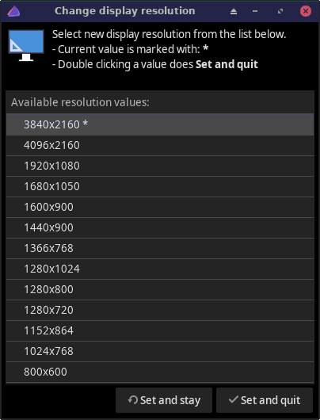

ChangeDisplayResolution
Helps changing display resolution (with xrandr).

Select the desired resolution on the list and click
- Set and stay (sets the resolution but doesn't
quit)
- Set and quit (sets the resolution and quits)
- (x) on the upper right corner to just quit
The * character on the list shows the current resolution.